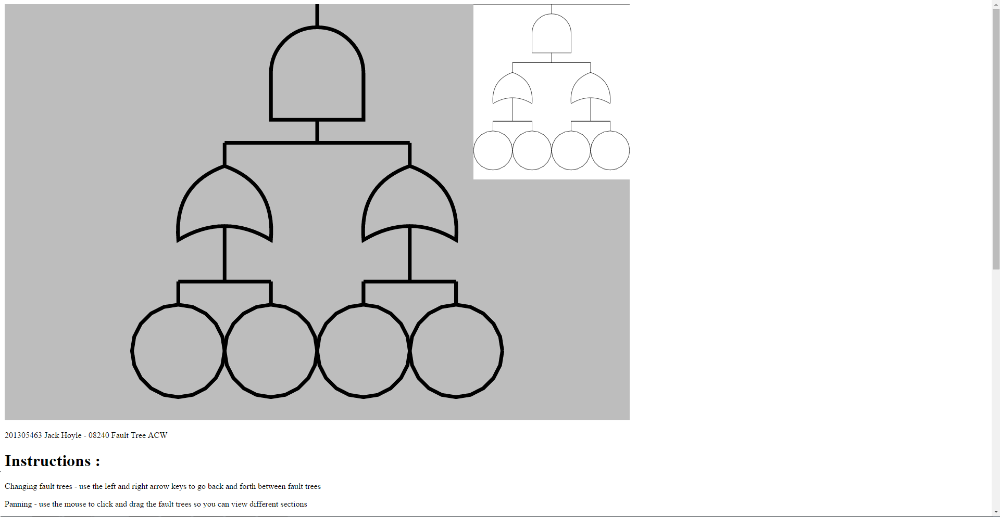
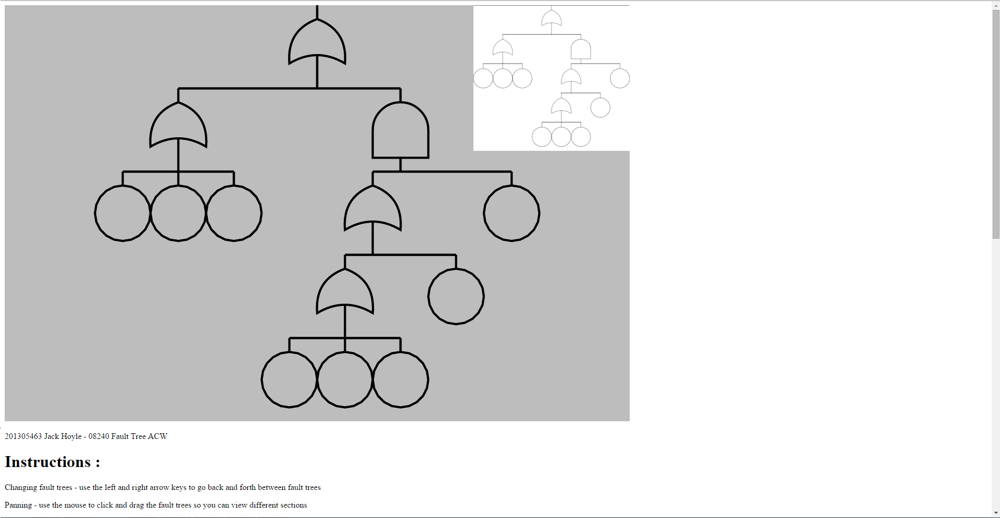
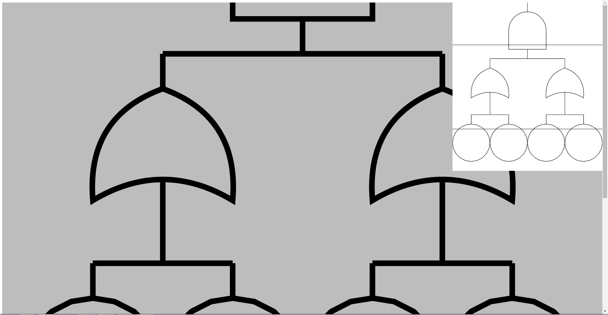
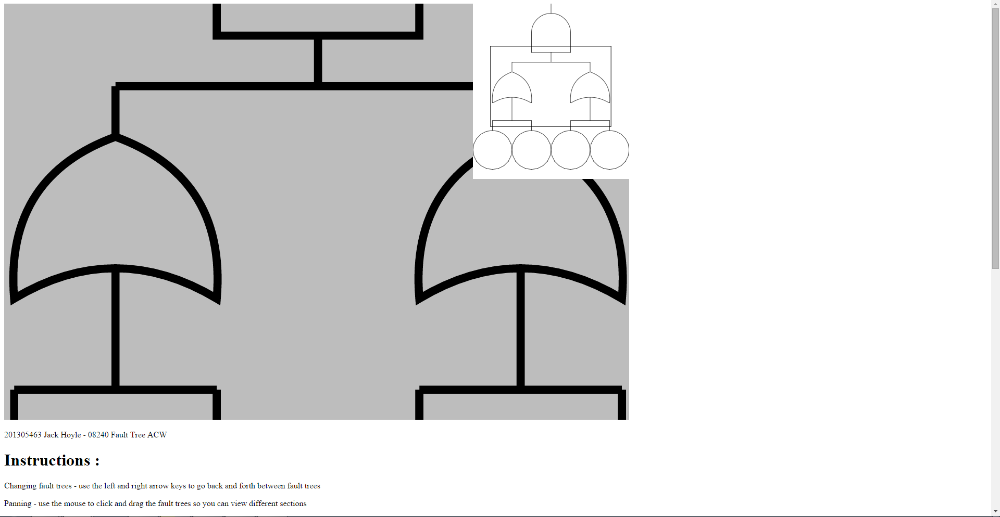
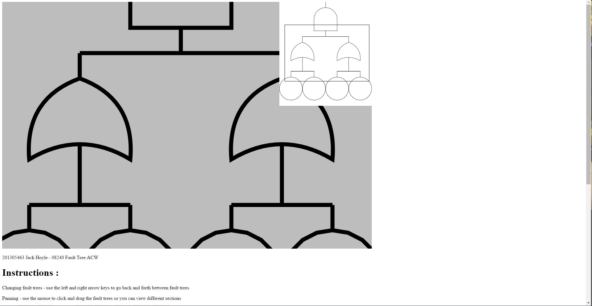
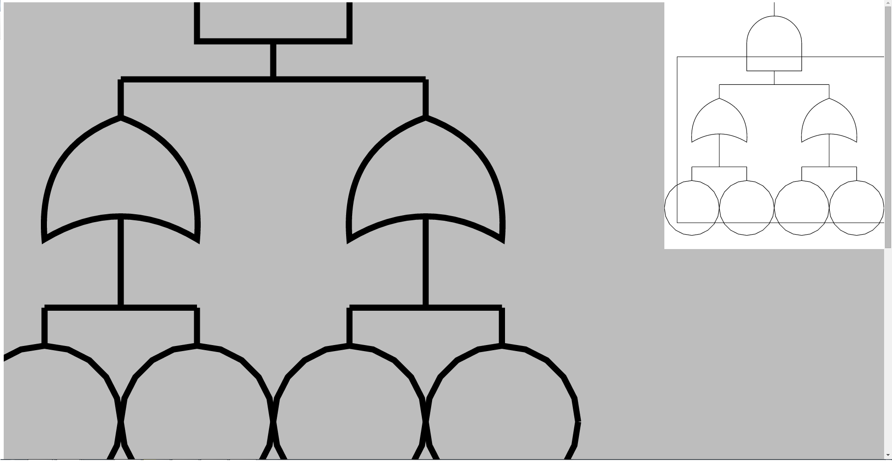

201305463 Jack Hoyle - 08240 Fault Tree ACW
Changing fault trees - use the left and right arrow keys to go back and forth between fault trees
 Panning - use the mouse to click and drag the fault trees so you can view different sections
Zooming - use the mouse scroll to zoom in and out of the current fault tree where the mouse is pointing
Fit to canvas - to make the current fault tree fit to the current press enter
Change to Dynamic canvas - to change to canvas so it fits to the window you press the "F" key
 Changing fault trees - to change the fault trees when the arrow keys are pressed i incremented the tree index when the key is pressed.
Panning - to make the trees pan i used an event to detect whether the mouse had been clicked if so it triggered a boolean to say that the canvas was grabbed, then i have an event that triggers when the mouse is moved to check if the canvas has been grabbed, if so then i measure the distance the mouse has been moved and add it to the canvas position
Zooming - to make the canvas zoom i used an event that triggered when the mouse wheel has been scrolled which increase and decreases the mousedelta depending on if it has been scrolled in or out this in turn increases or decrease the global zoom variable
Fit to canvas - when you press the key it calls a method to figures out the ratios of canvas width by the whole tree width and the canvas height and tree height and if the height ratio was larger than the width ratio it would set the global zoom variable to the width ratio and centre the tree as well if the width ratio is larger than the height then it will do the same but using the height ratio
Change to dynamic canvas - when the key is pressed it first checks if it is already dynamic if it is it will set set the canvas size back to the set size if not then it will set the canvas size to the inside of the open window if the window is resized then it will trigger an event that checks if the dynamic canvas is active and if it is it will also set the canvas size to the inside of the newly sized window and change the minimap size along with it